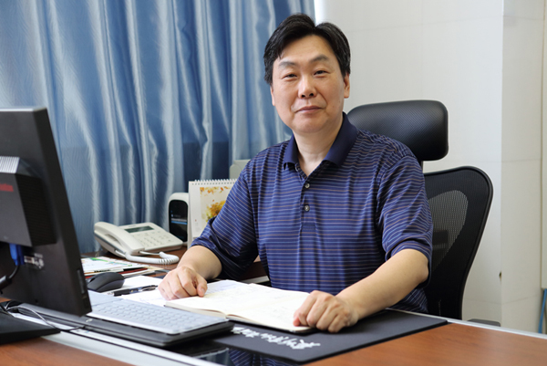
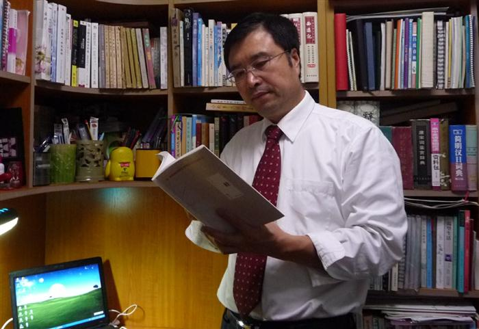
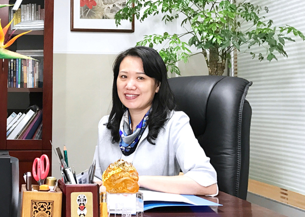
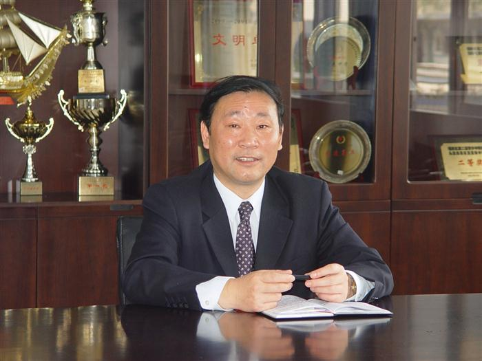
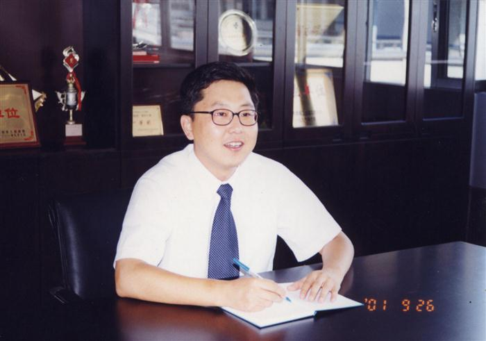
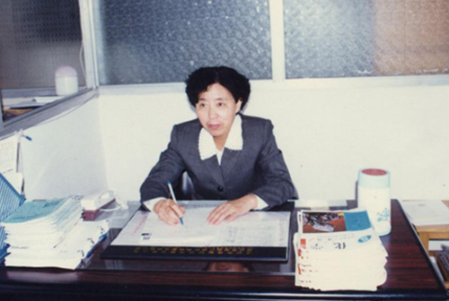
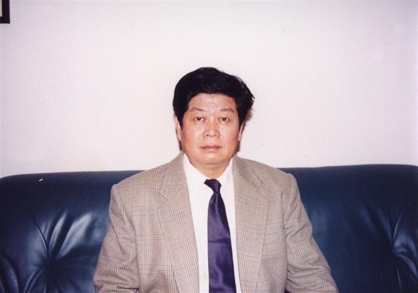
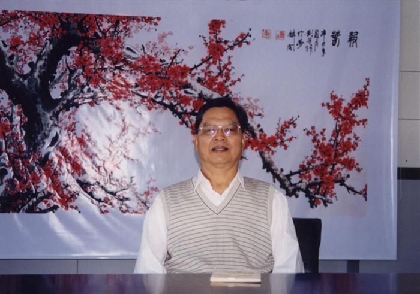

第八任（现任）校长（2019年12月至今）：张文枫
张文枫，莲花中学党总支书记、校长。1988年湖北大学数学系毕业，中学高级教师。先后担任过数学备课组长、教研组长，梅林中学教务处主任、副校长，彩田学校校长等职。2011年参加深圳市第一期中学校长教育管理与创新培训班，先后在北京大学和美国布朗大学学习。曾参加了清华大学和上海教科院组织的校本研修专项培训学习。论文《课堂教学，走向未来》和课例《平行线等分线段定理》被广东省教育厅选送，在全国首届计算机辅助数学教学研讨会上作了论文宣读和课件演示。2000年代表深圳市在全国中青年教师说课比赛中，获得广东省一等奖、全国二等奖。多篇论文在国家数学核心期刊上发表。个人专著《初中数学学习捷径》、《新教材完全解读》、《魔方探秘》等由多家出版社出版发行。张文枫校长曾获评深圳市优秀教师、福田区优秀园丁、深圳市中青年骨干教师、深圳市学科带头人等荣誉。

第七任校长（2016年7月—2019年12月）：徐连佳
徐连佳，中共党员，中学高级教师，深圳市督学，莲花中学校长。曾任黄埔学校副校长、福田区教研中心副主任；深圳市基础教育办学平评估组组长，深圳市校长培训中心兼职讲师，广东省校长、教师培训基地校长、教师，深圳市福田区家长学校讲师团讲师；曾任沈阳铁路局生物学科带头人、福田区生物学科带头人；曾获东北三省生物学科说课比赛一等奖、全国教学设计一等奖、省教育科研成果一等奖；主编《中学科学实验教材》在浙江教育出版社出版。

第六任校长（2013年7月—2016年7月）：何俊
何俊，莲花中学校长，中学高级教师。1984年毕业于湖北大学物理系，1995年进修华南师范大学教科所教育管理专业研究生。1987年调入深圳市教育系统，曾任华强职校副校长、党支部书记，景秀中学校长兼党支部书记，福田区第四届人大代表，2013年7月起任莲花中学校长。曾获深圳市“三.八”红旗手，福田区“优秀园丁”，福田区依法治校先进个人等荣誉称号。曾参加国家教委九五规划课题《深圳市大中小学德育一体化》方案和《中学职业指导研究与实验》的研究，主持中科院心理所组织的国家十五规划课题子课题《数学示例演练》、全国教科十五规划重点课题子课题《班级为本学校辅导模式的综合研究》、深圳市教育科学十五规划立项课题《中学生创新能力的培养与校本课程开发的研究》和由科技部、中央教科所组织的国家社科类基金“十一五”规划课题子课题《开设“学会创新”校本课程 点燃学生智慧火花》等课题的研究与实验工作，课题成果获全国一等奖、深圳市首届教育教学科研优秀成果一、二等奖等，个人曾获深圳市首届教育教学科研优秀成果二等奖、福田区优秀成果一、二等奖，有多篇论文公开发表、获奖。目前是广东省中小学校长培训中心客座教授、深圳市科普基地专家组成员，2013年作为深圳市教育界唯一代表当选为广东省第六届青少年科协常务理事。
校长寄语：
我们的基础教育既要为社会发展需要培养人才，又要为学生自身的成长与发展奠定基础。
追求远大的理想和培养良好的习惯，是青少年学生为自己的未来准备的两大法宝。理想决定你能看到的天地有多大，习惯则决定你能走多远，飞多高。

第五任校长（2003年9月—2013年7月）：杨崇琦

第四任校长（2000年3月—2003年9月）：李吉南

第三任校长（1997年9月— 2000年3月）：卫改梅

第二任校长（1993年9月— 1997年9月）：郭正才

第一任校长（1991年7月—1993年9月）：江志新